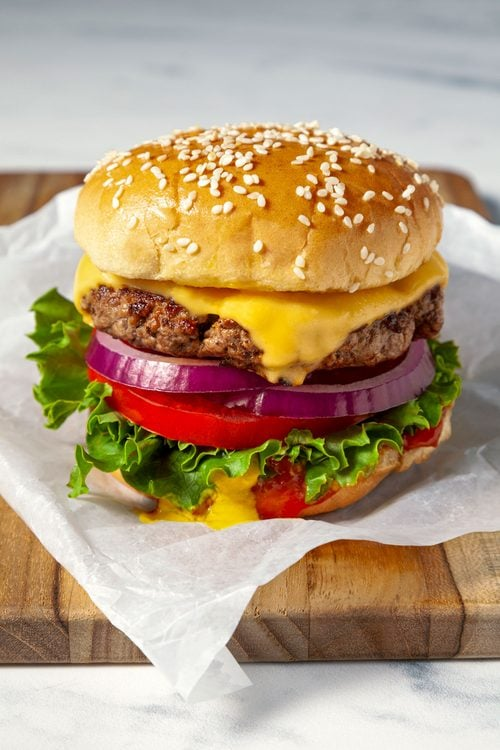

Burger

Description
Home
A burger is a popular meal made with a cooked patty inside a bun, usually served
with cheese, lettuce, tomato, and sauce. It is quick, filling, and full of flavor.
Ingredients
- Burger buns
- Ground beef patty
- Cheese slices
- Lettuce
- Tomato
- Onion
- Ketchup or burger sauce
- Salt and pepper
Steps
- Season the beef patty with salt and pepper.
- Cook the patty in a pan until browned and cooked through.
- Add cheese on top and let it melt.
- Toast the burger buns lightly.
- Add sauce, lettuce, tomato, onion, and the patty to the bun.
- Close the burger and serve warm.